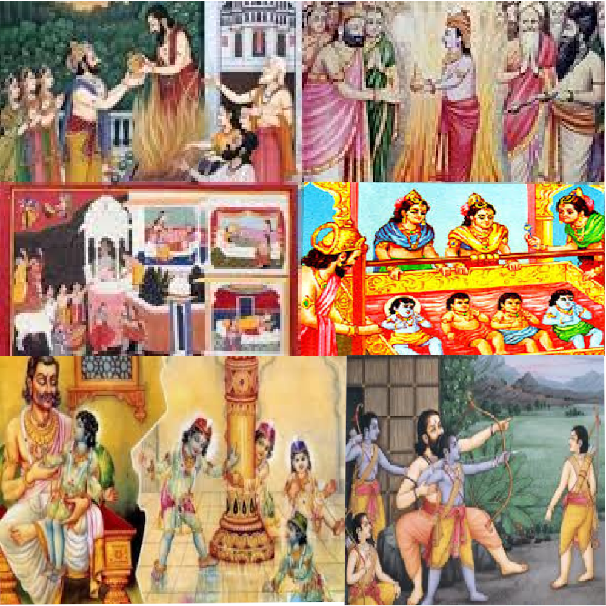

|

|
The first book of Ramayana, the Bala Kanda depicts the origin of Lord Rama and his siblings, Lakshmana,
Bharata, and Shatrughna. Dasharatha, the King of
Ayodhya had three wives, Kausalya, Kaikeyi and
Sumitra. Yet, he was childless. He thus performs a fire sacrifice, putrakameshti yagya,
which results in him being blessed with four children, of which Rama is born to Kausalya, Bharata to Kaikeyi, while Lakshmana and Shatrughna are born to Sumitra.
In Bala Kanda, there are detailed accounts of the childhood days of Rama and his siblings and how they learn about scriptures and the art of combat and warfare.
One incident, which is always highlighted even in modern reproductions of Ramayana is the instance when Rama and Lakshmana destroyed the demons that were disturbing
Vishwamitra in performing sacrificial rites. Vishvamitra himself chose Rama to fight the demons when he came to Dasharatha’s
court for help. Lakshmana loyally followed Rama, even in the rest of Ramayana, Lakshmana’s brotherly devotion to Rama is nonpareil. Rama was only 16 years of
age when he vanquished the demons. The Bala Kanda also has details of Sita’s origin and how Rama was married to Sita. Sita, is
considered to be a magical gift from God, as she was found in a field by the king, Janaka(the King of
Mithila). Rama is married to Sita after passing Shiva’s test of lifting and wielding a heavy bow.
Towards the end of Bala Kanda the brothers Rama, Lakshmana, Bharata and Shatrughna are married to Sita,
Urmila, Mandavi and Shrutakirti respectively.
|